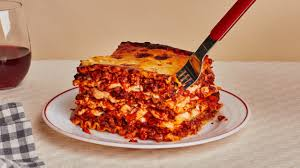

Lasagna
View all recipes

Description
Lasagna is a baked Italian-American dish made of layered flat, wide
pasta, usually rectangular or ribbon-shaped,
with various
fillings like meat sauce, cheese, and vegetables.
It's essentially a casserole, where layers of pasta are alternated
with flavorful components,
then baked until bubbly and golden.
The dish often includes ricotta, mozzarella, and parmesan cheeses,
along with tomato-based or béchamel sauces.
Ingredients
- Noodles
- Meat (ground beef or Italian sausage)
- Tomato sauce
- Ricotta or cottage cheese and various
- Mozzarella cheese
- Parmesan cheese
- Seasonings (parsley, basil, oregano)
Steps
-
Cook the Meat Sauce Brown your ground beef or sausage in a
skillet. Drain excess fat, add tomato sauce, parsley, basil,
oregano, salt, and pepper. Let simmer for 10–15 minutes.
-
Cook the Noodles Boil lasagna noodles in salted water until just
tender. Drain and lay flat on a towel so they don’t stick.
-
Make the Cheese Filling Mix ricotta (or cottage cheese) with an
egg, parsley, salt, and a little Parmesan.
-
Start Layering Spread a thin layer of meat sauce in your baking
dish.
-
Add the First Layers Place noodles over the sauce, spread cheese
mixture, sprinkle mozzarella, then spoon over meat sauce.
-
Repeat Layers & Top Repeat noodles → cheese → mozzarella → sauce
until the dish is full. Finish with sauce, mozzarella, and
Parmesan.
-
Bake & Rest Cover with foil and bake at 375°F (190°C) for 25
minutes. Remove foil and bake 20 more minutes until bubbly and
golden. Rest 10–15 minutes before slicing.